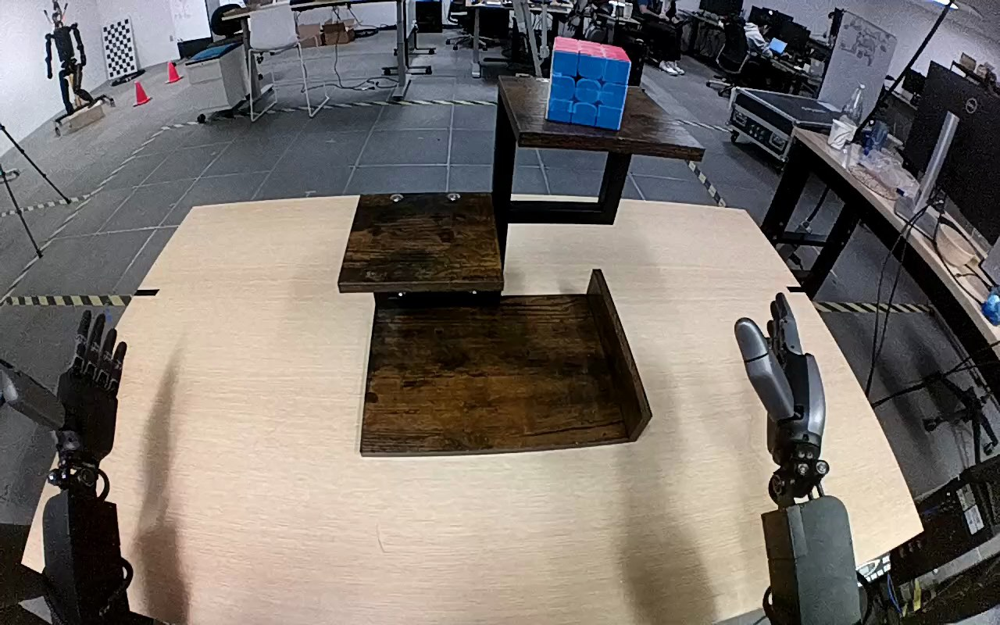

NVIDIA GR1 · 100
Video 100

Visual review action_review.json
{
"prompt_protocol": "humanoid_action_v1",
"prompt_provenance": "visually_authored_from_video_and_initial_frame",
"reviewed_contact_sheets": [
"sheet_001.jpg"
],
"inspected_frame_stride": 2,
"inspected_sampled_frame_count": 60,
"initial_scene": "A red-topped, blue-faced Rubik cube stands on the top wooden shelf; the middle and bottom levels are empty. Both arms extend forward from below the camera, with the open left hand inactive and the right hand poised to reach.",
"observed_sequence": [
{
"source_frame_interval": [
0,
20
],
"action": "Both hands remain open; the cube remains on the top shelf.",
"confidence": "high"
},
{
"source_frame_interval": [
21,
42
],
"action": "Right arm rises and extends to the cube on the upper shelf, with fingers opening around it.",
"confidence": "high"
},
{
"source_frame_interval": [
43,
70
],
"action": "Right hand closes around the cube and establishes a grip while it remains near the top shelf.",
"confidence": "high"
},
{
"source_frame_interval": [
71,
80
],
"action": "Right hand lifts the cube fully clear of the top shelf and draws it to the right.",
"confidence": "high"
},
{
"source_frame_interval": [
81,
104
],
"action": "Right hand transports the held cube down and inward to the bottom shelf.",
"confidence": "high"
},
{
"source_frame_interval": [
105,
116
],
"action": "Cube is lowered into the bottom shelf area; the hand remains around the cube while adjusting its position.",
"confidence": "high"
},
{
"source_frame_interval": [
117,
119
],
"action": "Right fingers open apart around the cube, leaving it on the bottom shelf. The hand remains beside it when the clip ends.",
"confidence": "high"
}
],
"arm_hand_roles": {
"right": "Sole manipulating arm: reaches, grasps, lifts, carries, lowers, and opens around the cube on the bottom shelf.",
"left": "Remains open at the lower-left throughout; provides no support or transfer.",
"coordination": "Single-hand transfer with no hand-to-hand exchange or human participation."
},
"anatomical_side_evidence": "The camera looks forward between the two robot arms, which extend away from their visible lower-body-side roots rather than facing the viewer. The active arm connects continuously to the robot right forearm/arm assembly entering from the lower-right, with the opposite left forearm entering from lower-left. This body-relative forward-facing arrangement, not a frontal image-side convention, establishes right-hand naming; it agrees with the source instruction.",
"evidence_frame_indices": [
0,
42,
64,
76,
98,
110,
116,
119
],
"inspection_coverage": {
"full_source_frame_count": 120,
"all_even_source_frames_viewed": true,
"source_initial_png_viewed_at_native_resolution": true,
"native_transition_and_final_frames_viewed": [
0,
42,
64,
76,
98,
110,
116,
119
]
},
"terminal_state": "The cube has reached the bottom wooden shelf. At the final frame the right fingers are visibly spread apart beside it; the hand has not withdrawn. The cube is slightly tilted with its red face on top, and the left hand remains idle.",
"uncertainties": [
"The cube base and shelf contact are partly hidden by the right fingers during lowering; the exact first frame of shelf support cannot be isolated from this view. The final fingers are visibly open, but the clip ends before the hand fully withdraws or longer-term settling can be observed."
],
"annotation_discrepancies": [],
"selected_execution_status": "success",
"video_id": "100",
"dataset": "NVIDIA_GR1_100",
"dedicated_review_agent": "review_gr1_100",
"review_source_video": "NVIDIA_GR1_100/100/original/original.mp4",
"source_frame_count": 120,
"source_fps": 20.0,
"native_detail_frames": [
0,
42,
64,
76,
98,
110,
116,
119
],
"world_model_prompt": "The robot reaches to the top level of the wooden shelf with its right hand, closes its fingers around the Rubik's cube, and lifts it clear. It carries the cube down to the bottom shelf and opens its fingers, leaving the cube on that shelf with its hand still beside it. Keep the camera fixed; preserve robot geometry, physically valid joint motion, and normal gripper opening and closing.",
"original_task_instruction": "Use the right hand to pick up rubik's cube from top level of the wooden shelf to bottom level of the wooden shelf.",
"selected_segment": {
"start_frame": 0,
"end_frame_exclusive": 120,
"reason": "Complete original single-task reference; no cropping or trimming requested."
},
"source_video_sha256": "3c2f5f20271f3eab8bdbdd6cdf627d6b0da7b5d8cc934bbe12a86904740a4f1a",
"review_completed_at": "2026-10-13T17:43:10.371688+00:00"
}